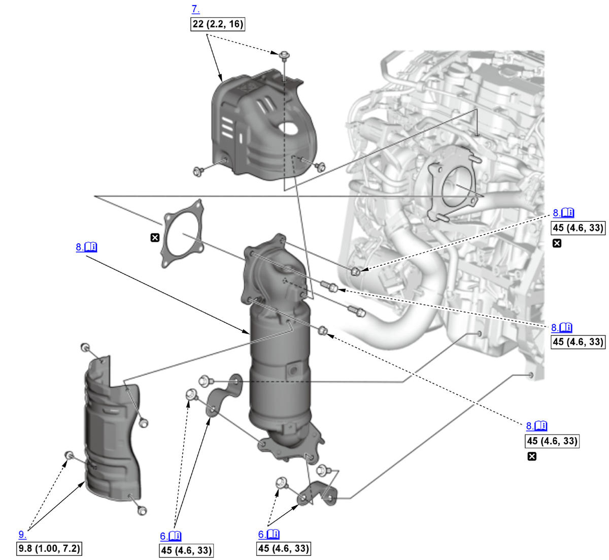
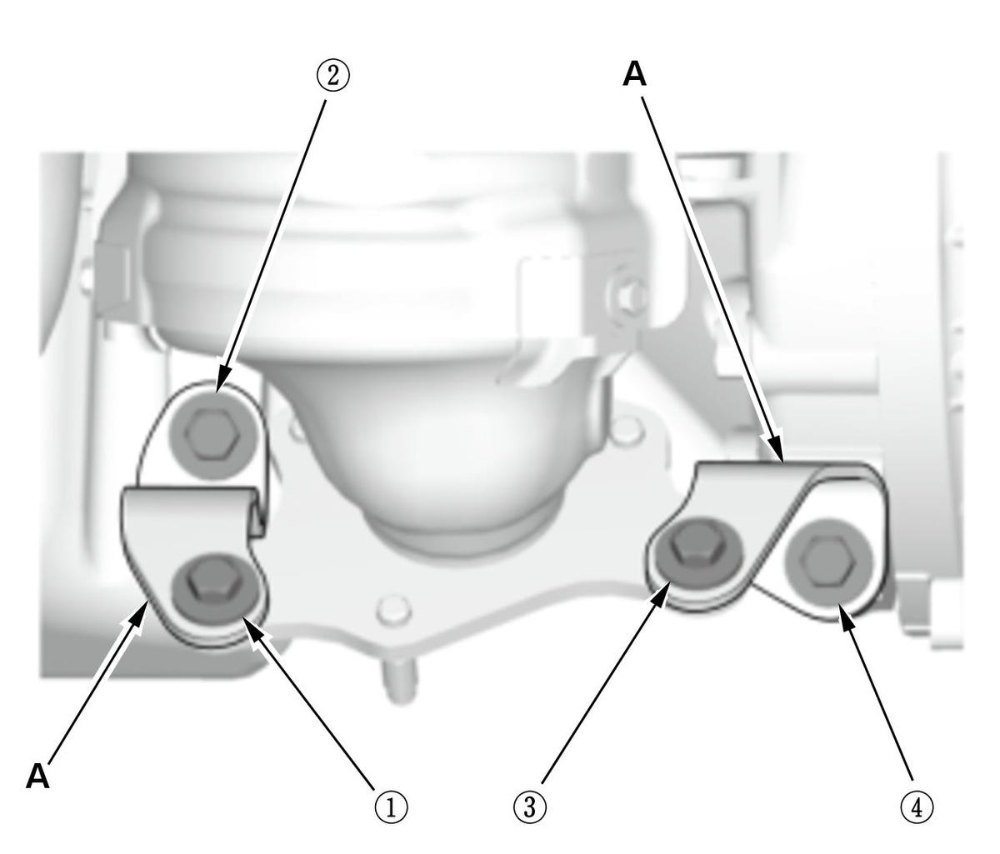

Removal and Installation: Procedure
NOTE:
Numbered call-outs in figure pertain to list numbers in following procedure.

Courtesy of HONDA, U.S.A., INC. |
Detailed information, notes and precautions |
 |
Torque: N.m (kgf.m, lbf.ft) |
 |
Replace |
- A/F Sensor - Remove
- Secondary HO2S - Remove
- Turbocharger Inlet Joint Pipe - Remove
- Engine Undercover - Remove
- Exhaust Pipe A - Remove
- TWC Bracket - Remove

Courtesy of HONDA, U.S.A., INC.Note for installation
- Before installing the TWC brackets (A), confirm the bolts and nuts fixing the TWC to the turbocharger are tightened to the specified torque.
- Tighten the TWC bracket mounting bolts to the specified torque in the numbered sequence shown.
- Exhaust Chamber Cover - Remove
- TWC Assembly - Remove
NOTE: Carefully remove the TWC assembly to lower side of the vehicle.
- TWC Cover - Remove (If Necessary)
- All Removed Parts - Install
1. Install the parts in the reverse order of removal.